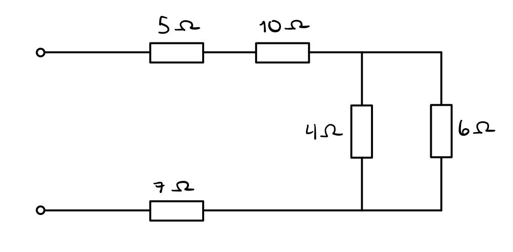
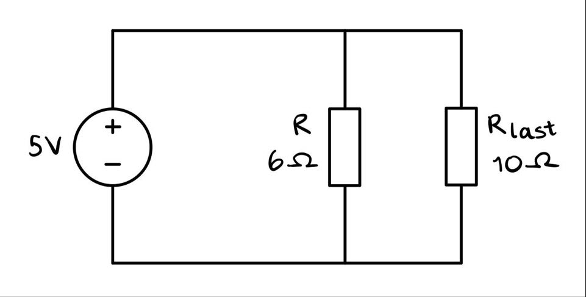
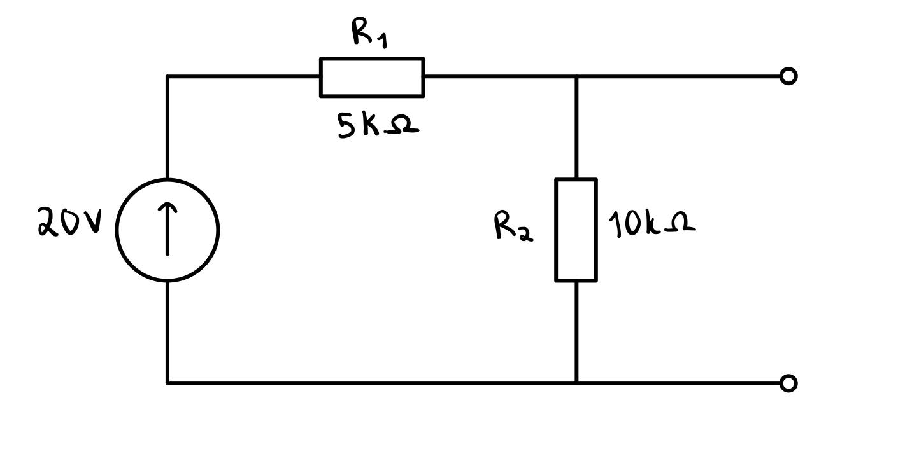

Enkle regneoppgaver
Gjør disse oppgavene før du starter på oppgave 1 for å få en bedre forståelse for teorien bak målingene du skal utførere senere. De er relativt enkle å utføre og du vil få beskjed om du har fått rett eller galt svar fortløpende.1. Hva er resistansverdien over terminalene?

2. Et punkt x har har spenningen -5V referert til jord. Et annet punkt y har spenningen +8V referert til jord. Hva er spenningen U_xy?
3. Hvor stor effekt omsettes i R_last?

4. Hva er kortslutningsstrømmen til koblingen?
